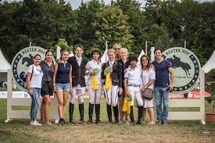
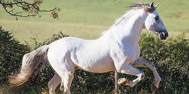
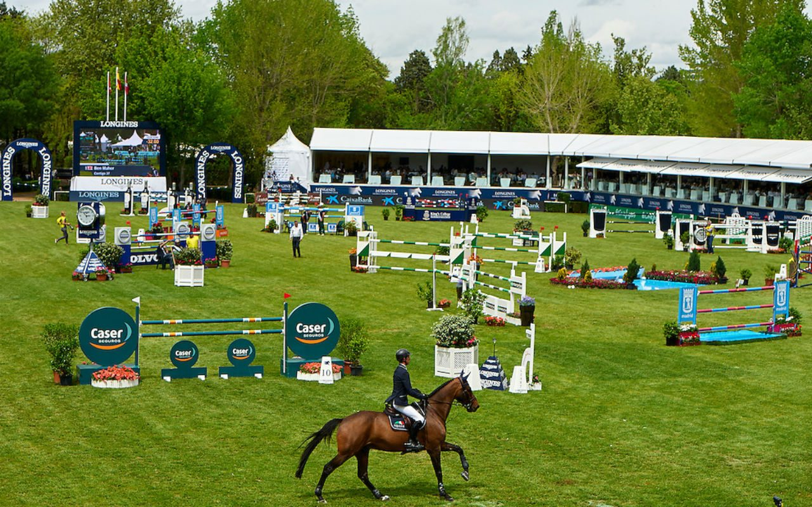

La equitación es el arte de montar a caballo, la palabra viene del latin equino que significa
montar a caballo una especialidad dentro de los deportes ecuestres, en ella no solo se evalúa al
jinete, sino también al caballo y el desempeño de ambos juntos.
Por ello , la equitación es el arte de mantener el control preciso sobre un caballo, así como
los diferentes modos de manejarlo. La equitación implica también los conocimientos para cuidar
caballos y saber usar la equipación que se requiere para esta actividad.
La primera escuela de equitación fue fundada en el año 1.539 en la ciudad Italiana de Ferrara.
La equitacion, el deporte mas fino.
Investigación
12/11/22
Las mejores razas de caballos
1. El Caballo Andaluz: Es un caballo español originario de Andalucía. Es una de las razas de caballos más
antiguas del mundo. Su nombre oficial es "Pura Raza Española" (PRE), y se le conoce
comúnmente como "Caballo Español". Años atrás era un caballo muy favorito entre los
nobles por su fuerza y poder (se usaban en la guerra) y admirable belleza. Tienen
colas y melenas muy tupidas que les dan un aspecto extraordinariamente hermoso. Este
caballo también se utilizó para criar nuevas razas europeas y americanas como el
Frisón, Hispano-Árabe, Mustang o Peruano de Paso, entre otras. Hablando en terminos
generales, el valor de estos caballos suele rondar entre los 40 mil y 60 mil
euros ya que son de ejemplares de pura raza
Dada su elegancia y su fisonomía, este caballo se ha convertido en uno de
los favoritos frecuentados en la gran pantalla tierranea
2. El caballo arabe: Esta raza es considerada una de las más antiguas del mundo junto con la anterior.
Hay evidencia arqueológica de que los caballos de hace 4.500 años eran muy similares
a los árabes de hoy. La reputación de estos caballos proviene de su inteligencia,
gran resistencia y fuerte carácter. Por la apariencia, siempre podemos encontrar que
levantan la cola y la cabeza en alto, tienen narices pequeñas, fosas nasales grandes
y ojos grandes. Esta raza también se usa ampliamente en mezclas con otras razas para
agregar velocidad, delicadeza, resistencia y buena estructura ósea. El precio de un
caballo árabe de pura raza, podría rondar los 25 mil y los 35 mil euros.
El caballo árabe es una de las razas de caballos más puras y con mejores
aptitudes físicas del mundo.Diana Oliver
Europeo
3. Caballo Pura sangre: El caballo se originó en Inglaterra y se desarrolló en el siglo XVIII. Procede de
una mezcla de yeguas inglesas cruzadas con sementales árabes, barberiscos y akhal
teke. Este caballo tiene las finas cualidades de un galope. Tiene piernas largas y
musculosas y cuartos traseros fuertes que pueden soportar fácilmente la fuerza de
una carrera. Es un caballo muy utilizado para las carreras, aunque también se
utiliza para la monta y el entrenamiento en general por su excelente condición
deportiva. El costo de un caballo pura sangre puede rondar entre los 20 mil y los 30
mil dólares.
El purasangre es el caballo de una raza que es producto del cruce de la
Árabe con las del norte de Europa
Comparación de precios
entre 40 y 60 mil euros.
entre 25 y 35 mil dolares.
entre 20 y 30 mil dolares
Este es un hermoso ejemplar de pura sangre.
Mi experiencia
3/feb/2023
Como son los torneos?
Los torneos de equitación en Querétaro son una experiencia inolvidable para todos los amantes de los caballos. Con una gran tradición equestre y una gran pasión por los caballos, Querétaro es el lugar perfecto para ver algunas de las mejores competencias de equitación en México. Los torneos de Querétaro son conocidos por su ambiente vibrante y su público apasionado, y ofrecen una oportunidad única para ver a los mejores jinetes y caballos del país.
Desde exhibiciones de salto hasta competiciones de dressage, los torneos de Querétaro ofrecen una amplia variedad de eventos para los espectadores. Además, con la combinación de una gran infraestructura y una tecnología avanzada, los torneos de Querétaro ofrecen una experiencia única e inolvidable para todos los amantes de los caballos. La atención al detalle y el cuidado que se pone en cada competición garantiza una experiencia sin igual para los espectadores.
En los torneos de equitación en Querétaro, los jinetes compiten en una variedad de categorías y eventos, desde el salto de obstáculos hasta la exhibición de danzas a caballo. Los jinetes y sus caballos son valorados por su habilidad, técnica y estilo, y la competencia es siempre intensa y emocionante. Además, los espectadores tienen la oportunidad de ver de primera mano la belleza y la majestuosidad de los caballos en acción, lo que hace que la experiencia sea aún más emocionante.
En resumen, los torneos de equitación en Querétaro son una oportunidad única para ver la pasión, la habilidad y la majestuosidad de los caballos. Con un ambiente vibrante y un público apasionado, los torneos de Querétaro ofrecen una experiencia única e inolvidable para todos los amantes de los caballos. Asistir a uno de estos eventos es una oportunidad única para ver de primera mano la habilidad y la dedicación de los jinetes y los caballos, y para apreciar la gran tradición y pasión por los caballos en Querétaro.

Texto de descripción de mi ilustración.
Tipos de caballos
03/feb/2023
Que tipos de caballos son los mejores?
El Caballo Andaluz es una de las razas más populares para la equitación. Es conocido por su inteligencia, agilidad y docilidad, lo que lo hace ideal para exhibiciones y competiciones. Además, es muy dócil y fácil de entrenar, lo que lo hace ideal tanto para jinetes principiantes como experimentados.
El Caballo Frisón es otra raza muy popular en el mundo de la equitación. Se destaca por su belleza y elegancia, así como por su impresionante movimiento y gran resistencia. Es un caballo fuerte y versátil, capaz de desempeñarse bien en diferentes disciplinas, desde salto hasta dressage. Sin embargo, debido a su naturaleza fuerte, es recomendable que los jinetes tengan cierta experiencia antes de montar un Caballo Frisón.
Por último, el Caballo Holsteiner es una de las razas más populares para el salto y la equitación de campo. Es conocido por su velocidad, fuerza y agilidad, y es considerado uno de los mejores caballos para deportes ecuestres de alto rendimiento. Además, es un caballo inteligente y fácil de entrenar, lo que lo hace ideal para jinetes experimentados que buscan un compañero confiable y talentoso.

Caballo Andaluz
Top
10 competencias de equitación
04/10/22
El top 10 de equitación
Meydan (Dubái)
St. Moritz (Suiza)
Flemington (Australia)
Palio de Siena (Italia)
Happy Valley (China)
Rolex FEI World Cup
Longines Global Champions Tour
Goodwood y Cheltenham (Reino Unido)
Sanlúcar y Ribadesella (España)
Campeonato Mundial de Saltos Ecuestres
La mayoria de las competiciones como podras ver son en Europa, ya que ahi fue donde nacio el
deporte y donde todos los jinetes quieren participar

Las competencias son ostentosas y elegantes.
Video recopilacion de equitación
07/10/22
Este video de la Real Federación española de equitación sobre su competencia, esta es una d elas más importantes del mundo